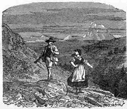

Braiko Petr

Braiko Petr. Anh hùng Liên Xô. Tham gia bảy trận tập kích của binh đoàn (brigade) du kích do S.A.Kovpak chỉ huy. Với mơ ước từ bé là trở thành phi công chiến đấu, ông tốt nghiệp Trường Thông tin Biên phòng Maskva và vào ngày 22 tháng Sáu đã tham gia đánh trả quân xâm lược Quốc xã trên tuyến biên giới Liên Xô-Rumani. Bắt đầu chiến đấu từ ngày 22 tháng Sáu năm 1941 với vai trò là chiến sĩ biên phòng Xôviết canh gác biên giới với Rumani. Đã chứng kiến bi kịch lực lượng Xôviết bị bao vây và đánh tan gần Kiev. Trải qua nhiều năm họat động sâu trong hậu phương địch. Được dẫn dắt bởi những chỉ huy du kích Xôviết nổi tiếng tại Ukraina là S.A.Kovpak, S.V.Rudnev và P.P.Vershigora.
Ông đang ở đâu khi chiến tranh nổ ra?
Tôi là một người lính biên phòng, vì thế tôi phục vụ tại vùng biên giới khi bọn Quốc xã xâm lược Liên Xô lúc 4 giờ sáng ngày 22 tháng Sáu. Tôi thuộc đơn vị biên phòng số 97 đóng tại chốt biên giới 13 thuộc thị trấn Chernovtsy. Lãnh thổ Tây Ukraina được sáp nhập vào Liên Xô năm 1939, do đó chúng tôi cần cải thiện tình hình an ninh tại chốt biên giới của mình. Đường biên giới đi ngang qua một vùng rừng núi phong cảnh rất đẹp. Khi được chuyển tới chốt năm 1940, tôi đóng lon thiếu úy. Điều đầu tiên tôi phát hiện là các bạn đồng đội biên phòng của mình đã có trong tay 9 tới 12 năm kinh nghiệm, trong khi thời gian nghĩa vụ yêu cầu chỉ là 3 năm! Lý do là mỗi khi thời hạn nhập ngũ vừa hết thì họ lại nộp đơn xin tăng hạn. Họ không thể rời chốt, nó tựa như một gia đình đối với họ.
Lính biên phòng đi gác theo từng tổ hai người: một tổ đi theo lối mòn, một tổ khác vào vị trí phục kích, một tổ tới bãi trống quan sát, một tổ nữa – tới chốt thông tin liên lạc. Chỗ chúng tôi có trung sĩ Zưkin, anh ấy phục vụ đã được 11 năm. Đối với tôi, một thiếu úy, anh ấy là một chuyên gia, bởi anh biết tường tận mọi việc. Vì thế tôi bảo anh: “Cậu giúp tớ học hỏi kinh nghiệm nhé?” và anh đáp: “Được”. Tôi vẫn còn nhớ rất rõ về anh, anh hướng dẫn tôi mọi kỹ năng cơ bản trong suốt nửa năm trời, một số chuyện không thể hình dung nổi trong bất kỳ ngôi trường hay học viện nào.
Năm 1941 chứng kiến những vi phạm không ngớt vùng biên giới. Chúng tôi không được tiếp viện và đụng độ bùng lên đêm nào cũng có. Hàng đêm xuất hiện những kẻ xâm nhập và chúng tôi bắt được hầu hết. Những tên nào đã vượt qua không cho thấy có dấu hiệu gì nguy hiểm. Thời kỳ ác liệt nhất là vào tháng Năm 1941, khi bọn điệp viên đó bắt đầu quay ngược trở về (phía địch – LTD). Chúng tôi bắn hạ chúng ngay tại chỗ trong trường hợp không thể bắt sống được.
Ngày 22 tháng Sáu chúng tôi phải chịu đựng pháo bắn dữ dội, và rồi là bọn bộ binh cơ giới. Không có xe tăng, địa hình ở đây không cho phép chúng họat động. Một đồn biên phòng là một đơn vị nhỏ khỏang 50-75 người, phải bảo vệ một khu vực 20-25 kilômét biên giới. Nhưng việc bảo vệ biên giới lại rất khác với việc phòng thủ biên giới. Năm mươi lính biên phòng trang bị súng trường và lựu đạn chẳng có tác dụng gì. Chỉ những sĩ quan mới được trang bị tiểu liên. Và vũ khí cũng không được tốt. Lính biên phòng chưa bao giờ được huấn luyện để đánh xa. Họ thường để kẻ thù tới gần và ra đòn quyết định giết ngay đối phương. Đấy cũng là cách chúng tôi chiến đấu trong ngày đầu tiên của chiến tranh. Chúng tôi tản ra và mỗi tổ hai người tự độc lập chiến đấu. Cuối ngày đầu tiên chỉ còn có hai người sống sót. Tất cả đều bị giết. Tới chiều tôi về được ban chỉ huy đơn vị để báo cáo những gì đã chứng kiến. Sau chiến tranh tôi tự hỏi liệu có ích gì khi ta ra đi chiến đấu mà bụng biết chắc rằng mình sẽ bị giết.
Ông đã chứng kiến cuộc phong tỏa Kiev. Ông có thể kể thêm cho chúng tôi về sự kiện này được không?
Tôi được cấp giấy thông hành và chuyển về Trung đòan bộ binh cơ giới số 4 thuộc Xôviết NKVD tại Kiev. Trung đòan gồm những lính biên phòng còn sống sót. Tôi được chỉ định làm đại đội trưởng đại đội liên lạc. Nhưng chẳng có gì là liên lạc cả. Có chỉ huy và trang bị kỹ thuật nhưng không có lính. Chỉ huy ra lệnh cho tôi tổ chức nhân sự cho đại đội cho phù hợp yêu cầu thời chiến trong thời hạn hai tuần. Tôi chọn mấy tay lính dự bị, những anh chàng trước kia từng làm sĩ quan liên lạc và giờ quay lại tham gia chiến đấu từ cuộc sống dân sự. Trung đòan tôi được yêu cầu phòng thủ trên sông Irpen chảy dọc đường quốc lộ Zhitomir về phía Tây Kiev. Bọn Đức đã đánh tan tuyến phòng thủ gần Zhitomir và lập ra một lực lượng cơ động gồm hai tiểu đòan xe tăng cùng lính pháo thủ và chọc thẳng vào khu Kreshchatik tại Kiev. Chúng tôi chặn chúng lại. Tại đó lần đầu tiên tôi thấy việc chiến đấu thú vị. Trong chiến hào được gia cố bằng bê tông chúng tôi hòan tòan an tòan. Chúng tôi không bị phát hiện và được trang bị đầy đủ. Vì thế chúng tôi chỉ ngồi chờ cho hai tiểu đòan kia tới gần chiếc cầu băng qua sông Irpen. Con sông vốn hẹp nhưng sâu đáy, và khi hai chiếc tăng đầu tiên trèo lên cây cầu, nó nổ tung lên không trung và đổ sập xuống sông cùng đám xe tăng. Đòan xe tăng đang chạy với tốc độ cao và chúng tôi nã đại liên và tiểu liên vào chúng. Mất khỏang chừng 15 phút để thiêu rụi tòan bộ đòan quân địch. Bọn Đức tổ chức một cuộc đột kích khác vào ngôi làng Belogorodki. Nhưng chúng tôi lặp lại tương tự và kẻ thù phải ngưng tấn công trên hướng chúng tôi.
Kế đó bọn Đức quyết định đột phá tuyến phòng thủ tại nhà ga Boayrka nằm phía nam Kiev. Đòn tấn công thật dữ dội như vẫn thường xảy ra. Nhưng Binh đòan dù số 5 của đại tá Rodimtsev là một trong những đơn vị tinh nhuệ nhất. Đại tá Radimtsev sau này trở thành tướng và Hai lần Anh hùng Liên Xô. Binh đòan của ông thành lập từ những lính biên phòng ngay từ trước chiến tranh. Lính biên phòng quen với đánh cận chiến nhưng bọn Đức không biết điều này. Quân địch đưa tới đây ba sư đòan bộ binh môtô, nhiều trung đòan tăng và đưa khoảng 1000 bộ binh lập một hình bán nguyệt đi trước, tất cả tập trung trên một dải đất hẹp. Chúng muốn làm chúng tôi hoảng sợ. Khi đã tới gần, chúng bị cánh lính dù bắn hạ sạch – cả đám bộ binh, đám xe tăng và sư đòan môtô. Trận đánh kết thúc sau một tiếng rưỡi đồng hồ. Bọn Đức phải đưa xe ủi đất tới và mất suốt hai tuần liền dọn dẹp xác chết. Khi đó chúng tôi đã nghĩ rằng kẻ thù sẽ không bao giờ chiếm được Kiev.
Trung đoàn ông tụt lại trong hậu phương địch ra sao?
Bọn Đức chọc thủng phòng tuyến Xôviết ở hai nơi – phía bắc Kiev gần Gomel và phía nam Kiev gần Kremenchug. Chúng đưa tới đây các tập đoàn quân xe tăng và những tập đòan quân này tiến thẳng về phía đông vào cuối tháng Tám. Bọn Đức nhanh chóng tiến được 350 kilômét vào sâu trong nội địa và đồng tiến tới gần Konotop-Bakhmachi-Vorozhba phía đông Dnieper. Năm tập đòan quân ta bị lọt vào giữa vòng vây thép đó. Nhưng chúng tôi chỉ biết được chuyện đó khi đã là cuối tháng Chín.
Đột nhiên chúng tôi nhận được mệnh lệnh cho nổ tung các cứ điểm phòng thủ và rút về phía bờ đông của sông Dnieper. Nước mắt lưng tròng chúng tôi phá hủy tuyến phòng thủ của mình, rút lui về Kiev trong đêm tối mà không được nổ một phát súng, giật mìn nổ tung mọi cây cầu bắc qua sông Dnieper và tiến về bờ đông của sông Dnieper. Khi đó chúng tôi cho rằng mình thế là đã an tòan. Do đó, chúng tôi đi xa hơn về phía đông… và bọn Đức có mặt ở khắp nơi, chỗ nào chúng tôi tới cũng đều gặp bọn Đức. Chúng tôi tới được sông Trubezh, cũng tựa như sông Irpen, hai bên bờ lầy lội. Chúng tôi biết được rằng có một cây cầu cho đường sắt bắc ngang qua sông. Thế là chúng tôi tiến lên đó, lót ván lên để xe tải có thể chạy qua được và hai tiểu đoàn chúng tôi tiến sang phía bờ đông. Ngay khi chiếc xe cuối cùng rời khỏi cầu, bọn Đức dội pháo, súng máy và tiểu liên lên đầu chúng tôi, và sau vài phút tòan bộ đòan xe chúng tôi đã cháy rụi.
Ngay từ phát đạn đầu tiên tôi đã lăn ra khỏi buồng lái và qua được bờ đối diện, nơi không có quân Đức. Tôi đứng thẳng trên hai chân và trông thấy bên cạnh có 11 người nữa còn sống sót. Tất cả đều là lính trơn, chỉ có tôi là sĩ quan duy nhất. Họ đeo khẩu carbine với 10 viên đạn còn tôi chỉ có mỗi khẩu súng lục “TT”.
Đột nhiên chúng tôi nghe thấy tiếng súng nổ từ hướng bờ sông. Và chúng vang tới ngày một gần hơn. Đằng sau chúng tôi là dòng sông và cây cầu thủng lỗ chỗ. Chúng tôi chẳng biết chạy đi đâu, chúng tôi đã bị hòan tòan bao vây. Do đó chúng tôi chỉ còn mỗi một cách – tìm lấy một chỗ trú kín đáo, để cho kẻ thù tới gần khoảng 5 mét, tiêu diệt chúng và đi tiếp.
Tính toán của tôi thật ngây thơ trẻ con. Tôi nghĩ rằng bọn chó sẽ không dám đi ra chỗ lầy và sẽ mất dấu chúng tôi, và bọn Đức đi sau sẽ bắn lên trời để cảnh cáo. Mọi chuyện xảy ra khác hẳn. Bọn Đức cắt cỏ đem tới, chỉnh khẩu súng máy và bắn xuống. Mỗi khi chúng nã ra một lọat đạn bắn đứt những tán lau sậy là một lần chúng tôi hụp đầu xuống nước. Đám sậy đã giúp chúng tôi rất nhiều. Lý do là nếu ta ngậm nó trong miệng thì ta có thể ở dưới nước lâu tới nhiều phút. Cuộc bắn giết cuối cùng cũng chấm dứt. Chúng tôi kiên nhẫn chờ đợi. Chỉ còn bốn người sống sót.
Cho tới cuối đời tôi vẫn sẽ luôn ghi nhớ cái ngày đó. Đó là nỗi sợ hãi kinh khủng không tài nào tả được, còn đáng sợ hơn chính bản thân chiến tranh. Không vũ khí, chúng tôi không thể tự lo liệu và không biết phải làm gì tiếp theo bởi cũng chẳng có bản đồ bên người. Lúc đó là vào ngày 30 tháng Chín năm 1941.
Thế là tôi tụt lại trong vùng địch kiểm sóat. Bọn Đức có ở khắp nơi. Trong ngôi làng đầu tiên gặp được, chúng tôi đã thay lấy quần áo dân thường và dân làng cho chúng tôi một ít đồ ăn.
Từ vùng Kiev chúng tôi đi tới vùng Chernigov. Tại làng Voronki chúng tôi bị một chiếc xe tải chặn lại. Hai tên Đức ngồi trong buồng lái, ngoài ra có bốn tên nữa ngồi sau xe. “Partisanen? (Du kích – LTD)”- chúng hỏi. Và không chờ trả lời chúng ra lệnh cho chúng tôi leo lên xe tải. Tôi có một khẩu súng lục và 30 viên đạn. Nếu chúng tìm thấy thì câu chuyện sẽ kết thúc tại đây. Trong khi tôi còn đang tính xem mình sẽ làm gì với khẩu súng thì chúng tôi được đưa tới một trại tù binh rộng lớn trước đây là một khu nhà kho kỹ thuật nằm tại Darnitsa, Kiev.
Tình thế lúc đó như thế nào?
Những người lính chúng tôi lúc đó trông không còn giống lính tráng nữa. Quấn trong tấm áo khoác lính rách nát, mũ lưỡi trai và mũ sắt lúc nhúc những rận, trông họ thật lôi thôi. Vây quanh khu trại là những người vợ và mẹ đang đi tìm người thân của mình. Lý do là họ biết có cả một tập đoàn quân đã bị bao vây. Bọn Đức tỏ ra khá hào hiệp. Nếu một người vợ tìm thấy chồng mình thì anh ta sẽ được thả. Đám phụ nữ đứng ngoài hàng rào suốt nhiều giờ liền và đem theo thực phẩm, họ ném chúng qua hàng rào. Tôi tận mất trông thấy có nửa ổ bánh mì nhà làm rơi xuống ngay sát chỗ chúng tôi ngồi. Khoảng 10 tù nhân nhào tới và họ bắt đầu đánh lẫn nhau. Năm tên sĩ quan Đức xuất hiện tại chỗ có tiếng la hét và khi đã biết chuyện gì xảy ra, chúng liền lăn ra cười. Rồi chúng rút súng ra và bắn thẳng vào đám đông đang tranh nhau. Đám tù binh tản vội theo mọi hướng và trên mặt đất chỉ còn lại nửa ổ bánh mì và năm xác chết. Cảnh ấy là tóc gáy tôi dựng cả lên. Tôi chợt nhận thấy rằng nơi đây chúng tôi không phải là con người, chúng tôi là sâu bọ và chúng tôi được đối xử như lòai sâu bọ. Khu trại được vây quanh bởi những hàng rào bê tông cao bốn mét có chằng dây thép gai xung quanh. Làm sao thoát ra ngòai được?
Thật tình cờ tôi được gặp Sergei, một cậu người Kavkaz mặc chiếc áo khóac đen còn tốt. Anh ấy cho tôi biết về các quy luật trong trại tù. Mỗi thứ bảy bọn chúng đem chôn 200 người bị chết đói. Vào buổi sáng chúng phân phát súp loãnng nấu với thứ củ cải không thèm rửa sạch. Tới 8 giờ sáng tù nhân được tập hợp lên một xe tải và chở đi xây lại những cây cầu bắc qua Kiev. Những ai không nằm trong danh sách lao động thì làm người phục vụ cho bọn sĩ quan sống trong khu trại đối diện. Sergei kể rằng mỗi ngày anh ta đều được đưa đi làm việc cho thiếu tá Lutke. Tên thiếu tá cho anh ta một giấy thông hành để anh ta có thể tự do đi lại. Trong thời gian cuộc nói chuyện của chúng tôi xảy ra thì anh ấy đang phục vụ cho một viên sĩ quan khác. Vì thế tôi hỏi xem anh ấy có thể cho tôi tờ thông hành của Lutke được không. Sergei chìa ra một mảnh giấy có ghi “Giấy phép cho ba người. Thiếu tá Lutke”. Tôi mau chóng cầm lấy và chợt cảm thấy có một thoáng hy vọng. Tôi nhận ra rằng mình sẽ được an toàn.
Sáng hôm sau, khi thức dậy, tôi và hai người nữa cùng trung đoàn trèo xuống dưới tấm ván làm giường ngủ. Chúng tôi nằm đó thêm một giờ nữa cho tới khi sự ồn ào buổi sáng giảm bớt. Chúng tôi đi ra ngoài. Điều quan trọng nhất là cư xử sao cho tự nhiên và không tỏ ra sợ hãi. Chúng tôi phải vượt qua được bốn trạm gác và một chiếc cổng. Tại mỗi trạm gác tôi đều bảo với lính canh rằng mình đang đi phục vụ cho một sĩ quan. Trời đầy sương giá và tại mỗi trạm gác đám lính canh đều trông tựa những cột băng lạnh lẽo. Chúng không nói gì, chỉ tránh sang cho chúng tôi đi qua. Chúng tôi rời trại và hướng tới khu nhà sĩ quan. Dọc khu sĩ quan có một con đường người dân Kiev hay dùng để tới chợ đổi chác hàng hóa cần thiết. Cả gia đình cùng đi với nhau. Khi chúng tôi đã tới được con đường tưởng chừng vô tận ấy, tôi hỏi một người đàn bà rằng mình có thể xách giúp được không. Bà ấy lập tức hiểu ngay chúng tôi từ đâu tới và bảo: “Hãy đi theo chúng tôi”. Chúng tôi qua được chiếc cổng. Giữa đám đông chúng tôi không thể bị phát hiện. Đấy là chuyện chúng tôi đã trốn khỏi trại ra sao, lặng lẽ và khôn khéo.
Làm cách nào ông tìm thấy đơn vị du kích của mình?
Dân làng cho chúng tôi hay có một đơn vị du kích Xôviết rất đông trong vùng Sumy. Tìm được đơn vị này thật khó khăn: hai sư đoàn quân Đức đang truy tìm nó nhưng đều thất bại. Tại làng Victorovo, tôi gặp một đám con gái đang khóc lóc. Họ bảo rằng họ khóc vì các bạn trai họ đã bị gọi vào tham gia một đơn vị du kích địa phương. Họ cũng bảo tôi rằng toán du kích đã động viên các chàng trai của họ đã chuyển sang làng Uzlitsa cách đây 5 kilômét. Tới được đó theo cách thức một vận động viên maratông, tôi gặp được một lính gác mang vũ khí, mặc chiếc áo choàng kiểu Hungary và đội chiếc calô lính Đức trên đầu. Sự trung thành của anh ta thật khó đoán. Anh ta kiểm tra tôi và rồi áp giải tôi tới một ngôi nhà gần đó. Ở ngay cửa vào có một tay gác khác, một cậu bé đeo khẩu súng trường Mosin 1891. Vào trong, tôi bị cật vấn bởi một người đàn ông mặc bộ đồ da sĩ quan Đức cùng một khẩu súng lục Parabellum của Đức bên sườn. Tôi nhẩm lại câu chuyện bịa của mình là đóng vai một học sinh Konotop trên đường tới nhà ông mình.
- 'Tại sao anh tham gia polizei?’
- 'Không. Tôi là dân thường và không biết sử dụng súng.’
- 'Tại sao anh gia nhập đơn vị Côdắc?’
- 'Không.'
- 'Thế còn đám du kích chống đối?’
- 'Không.' Trả lời khác đi có nghĩa là cầm chắc cái chết.
- 'Mẹ mày. Xéo khỏi đây mà về với ông mày đi.'
'Anh ta là ai vậy?’ – tôi hỏi tay lính gác thiếu niên đứng ngòai thềm nhà. ‘Có phải là sếp cảnh sát địa phương (polizei) này không?’ Cậu bé chửi thề và cho tôi hay rằng người đàn ông kia là đại đội trưởng du kích, thiếu úy Lưsenko. Tôi quay vội lại và thừa nhận mình là người có cảm tình với du kích. Họ không tin tôi là nhốt tôi lại để thẩm vấn. Tôi phải nằm ba ngày trong một phòng giam của quân du kích tại làng Zazirki.
Đó có phải là đơn vị của Kovpak không?
Đúng. Thực ra ông ấy đã điều khiển quá trình thẩm vấn từ căn nhà chỉ huy của mình. Bốn người ngồi đối diện tôi trên một chiếc bàn dài, trông có vẻ là cựu sĩ quan quân đội Xôviết. Người ngồi ngay đối diện – một ông khá lớn tuổi với bộ râu cằm nhỏ vuốt nhọn – đó là Kovpak. Tay đẹp trai trông khá ngầu ngồi bên trái ông ta – có bộ ria đen và cặp mắt sắc sảo thấu tâm can – là Rudnev. Anh ta là người thẩn vấn chính. Họ ghi lại tỉ mỉ những câu trả lời của tôi về hàng ngàn câu hỏi rất thông thường. Trong những quãng nghỉ giữa những cuộc thẩn vấn mỗi ngày, họ kiểm tra lại những câu trả lời của tôi với những người khác trong đơn vị của họ biết rõ về những địa điểm tôi đã nói tới. Tới ngày thứ ba, khi họ đang đặt câu hỏi về Konotop, một người bước ra từ một chỗ nấp đằng sau lò sưởi và nói với họ rằng anh ta đã nhận ra tôi. Trước chiến tranh, anh ta là Chủ tịch Hội đồng ở Konotop. Trong đơn vị Kovpak, anh ta chỉ huy đơn vị mà chúng tôi gọi là Trung đoàn Konotop. Tôi trở thành một chiến sĩ của trung đoàn này. Sáu tháng sau, Kovpak bảo tôi rằng trong ngày hành hạ đầu tiên, Rudnev đã tìm cách thuyết phục hội đồng thẩm vấn tạm hoãn quyết định đem tôi ra xử bắn.
Ông có thể kể lại tình hình và điều kiện trong đơn vị của Kovpak khi ấy được không?
Kovpak và Rudnev ban đầu hoạt động độc lập, mỗi người có trong tay khoảng ba chục người. Rồi Rudnev đề nghị một sự sáp nhập. 'Bố già' liền đồng ý. Ông ấy trở thành Chỉ huy trưởng, cho Rudnev làm Chính ủy. Ngay sau khi tôi gia nhập lực lượng của họ, một tay chỉ huy nữa xuất hiện, Piotr Petrovich Vershigora đến từ Cục Tình báo Quân sự Hồng quân. Trong năm 1943, khi quân số của đơn vị là 1500 người, bọn Quốc xã đã ước tính lực lượng của họ tới 20 ngàn người. Đấy chính là môi trường đã hun đúc tôi trở thành một chiến binh thực thụ. 
Nghiên cứu kế họach trước chiến dịch phá hủy một khu khai thác dầu mỏ tại dãy Carpath. Từ trái sang: S.A.KOVPAK, S.V.RUDNEV.
Ông giữ chức vụ gì trong đơn vị của Kovpak?
Trung đội trưởng, đại đội trưởng, tiểu đoàn trưởng, trưởng ban tình báo chiến thuật, trung đoàn trưởng.
Xin hãy kể lại cho chúng tôi về các chiến dịch của đơn vị du kích của ông.

Trở về sau cuộc tập kích Dãy Carpath, 1943. Người đi đầu là P.Ye.BRAIKO
Chỉ dẫn đầu tiên là tổ chức vượt qua hữu ngạn sông Dniepr và thiết lập một vùng mới dứơi quyền điều hành của Xôviết trong vùng lòng chảo rậm rạp gần nơi nhánh sông Pripyat đổ vào sông cái Dniepr. Trong cuộc tập kích điển hình của chúng tôi vào dãy Carpath mùa hè năm 1943, chúng tôi đã làm tê liệt giao thông trên tuyến đường sắt chiến lược từ Kiev tới Kovel và từ Kiev tới Lvov. Một cuộc tập kích khác vào miền đông nam Ba Lan đầu năm 1944 cũng là một thử thách thực sự. Không có ngày nào là không có hành quân và chiến đấu! Ban đêm thì không được nghỉ ngơi. Binh đòan Kovpak đụng độ với năm sư đòan tinh nhuệ của Đức trong suốt cuộc tập kích ấy. Ngày nào chúng cũng tìm cách bao vây chúng tôi, cứ thế trong suốt hai tháng trời. Nhưng ngày nào chúng tôi cũng thóat được. Rừng rậm là địa bàn của chúng tôi. Chúng tôi coi đó là nhà, còn kẻ thù thì trở thành những khách trọ không được mời, xa lạ và vụng về.
Xin hãy kể cho chúng tôi những nguyên tắc cơ bản của chiến tranh du kích. Nó có gì khác lạ đối với một sĩ quan quân đội chính quy như ông không?
Cẩm nang chiến thuật thông thường chỉ nói về ba hình thức chiến đấu chính: tấn công, phòng thủ và giao chiến. Giao chiến không có trong khái niệm của du kích và tôi luôn tránh giao chiến khi giữ nhiệm vụ trung đoàn trưởng. Thay vì tấn công, du kích dùng phương cách tập kích chớp nhoáng rồi rút lui. Thay vì phòng thủ thì họ phục kích. Một ổ phục kích tốt là tránh không để dù chỉ một phát đạn phản công vào sườn. Quan trọng nhất khi phục kích là chọn vị trí, cái này đem lại uy lực hơn bất cứ thứ xe tăng, súng máy hay bom đạn nào. Quân du kích buộc phải tiết kiệm lực lượng và đạn dược. Họ chủ yếu dựa vào các lọai vũ khí cá nhân trong chiến đấu.
Chúng tôi mất một năm rưỡi để học hết những bài học đó và rồi các chiến dịch của đám du kích chúng tôi trở nên chuyên nghiệp vô cùng. Trong năm tháng đầu chiến tranh, bọn Quốc xã đã tiêu diệt 17 tập đoàn quân chính quy Xôviết. Nếu mỗi tập đoàn quân đó chỉ cần có một chuyên gia về chiến tranh du kích trong đội ngũ thôi, hẳn thiệt hại đã giảm thấp hơn rất nhiều.
Quay trở lại những năm 1920s và 1930s, theo lời khuyên của M.V.Frunze, đất nước đã tiến hành những chuẩn bị quy mô lớn cho chiến tranh du kích. Lượng trang bị dự trữ đủ cho hai năm đã được chôn giấu tích trữ, và những trường huấn luyện du kích xuất hiện tại nhiều nơi, gồm cả Kiev và Kharkov. Rudnev đã tốt nghiệp tại đấy. Tuy nhiên, năm 1937, chính quyền trung ương đã đột ngột giải tán các cơ sở của hệ thống chiến tranh du kích, đồng thời với cả những nhân sự thực hiện. Tiếp theo sự kiện chiến tranh nổ ra năm 1941, mọi thứ lại phải dựng lại từ đầu.
Xin hãy mô tả một vài chiến dịch du kích thành công nhất của ông.
Mùa hè năm 1943, trung đoàn du kích của tôi với chỉ 200 người nhận được lệnh phải khóa chặt cuộc hành quân của ba trung đoàn môtô hóa SS – gồm cả pháo binh và xe tăng – tại hẻm núi nơi con sông Bystrica Nadwornianska tại vùng Đông Carpath chảy qua. Chúng tôi chỉ có một tiếng rưỡi đồng hồ dự trữ đạn để hòan thành nhiệm vụ và ban đầu tôi tưởng chừng đã thất bại đến nơi. Khảo sát địa hình thực tế làm nảy ra một giải pháp. Một con đường đất chạy dài suốt 5 cây số theo hẻm núi Bystrica băng qua con sông trên những chiếc cầu tại bốn địa điểm ngay gần miệng hẻm núi. Chúng tôi khôn khéo gài mìn tại những cây cần đó. Bọn Đức, khi hành quân, phải cho xe tăng và pháo binh lui về phía sau. Không hề biết về sự hiện diện của chúng tôi, chúng tiến vào hẻm núi theo đội hình hành quân thông thường và mau chóng lọt vào ổ phục kích hình móng ngựa của chúng tôi. Nhờ sự che chở của những tảng đá khổng lồ vốn có thể chịu được bất cứ thứ bom đạn nào, chúng tôi trút đạn như mưa vào chúng và xua chúng chạy tán lọan suốt 15 phút. Hòan thành nhiệm vụ, trung đòan tôi lập tức rút về một vị trí tương tự phía dưới dòng, cách đó khỏang một cây số. Bọn Đức mất tới năm giờ để băng bó thương binh, thu dọn xác chết và dọn dẹp con đường qua hẻm núi. Ba ngày cứ phục kích luân phiên như vậy đã làm tan tác 7 tiểu đoàn quân Đức. Trung đoàn tôi chỉ mất có 4 người.
Trong cuộc tấn công của Hồng quân để giải phóng Byelorussia tháng Sáu và tháng Bảy 1944, Sư đoàn Du kích Ukraina số 1 chúng tôi như hồi đó được gọi yểm trợ một gọng kìm của Phương diện quân Byelorussia 1 nhằm bao vây Cụm Tập đoàn quân Trung Tâm của Đức. Gần con sông Neman, sư đoàn gồm 600 người của chúng tôi – tức hai trung đoàn, trong đó có trung đoàn tôi, chạm trán với ba sư đoàn xe tăng và hai sư đoàn bộ binh môtô hóa của Đức. Để chống lại những xe tăng Tiger và Panther, chúng tôi chẳng có gì ngoài mìn chống tăng. May mắn thay, chúng tôi tìm cách chốt được trên một vị trí thuận lợi để chiến đấu – trên một khe núi sâu hai bên có bụi rậm dày đặc. Khi chúng đã tới tầm bắn trực diện, chúng tôi trút tất cả hỏa lực trong tay vào kẻ thù. Những xe tăng đi đầu cố gắng quay lại và lập tức cán phải mìn của chúng tôi gài hai bên đường. Tòan bộ đòan côngvoa Đức quay lại, cứu tôi khỏi phải suy nghĩ ra một giải pháp phức tạp để làm gì tiếp theo. Chúng tôi chỉ mất có hai người. Chiến tranh du kích như vậy đã đạt được đỉnh cao!
Đó có phải là cuộc tập kích cuối cùng của đơn vị Kovpak không?

Mọi người đứng trong tấm ảnh này đều vừa được phong tặng Danh hiệu Anh hùng Liên Xô. P.Ye.BRAIKO đứng thứ hai từ trái qua. Người đứng giữa là P.P.VERSHIGORA.
Dịch từ Anh sang Việt: Lý Thế Dân